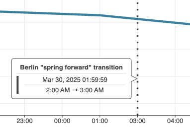
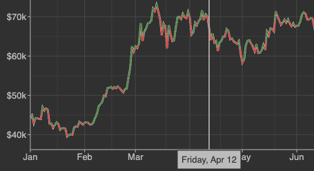
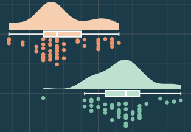
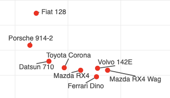
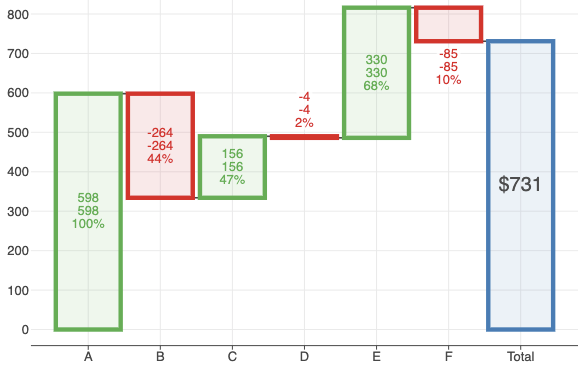
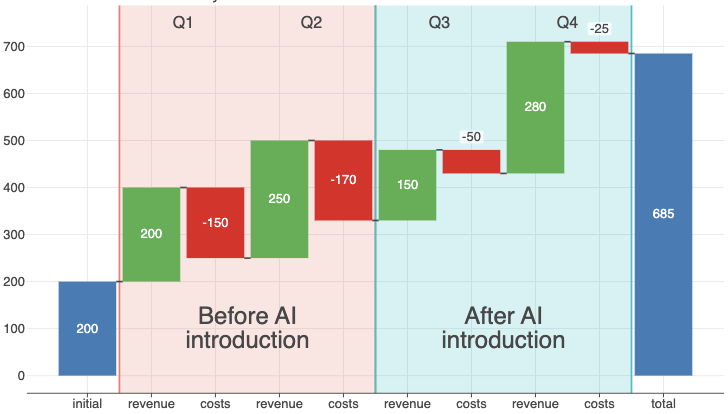
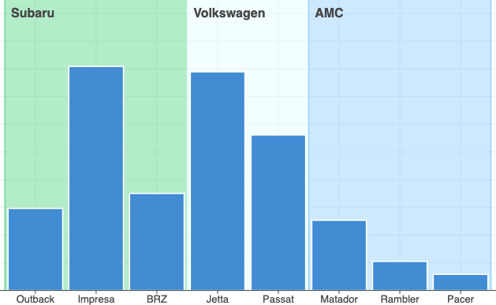
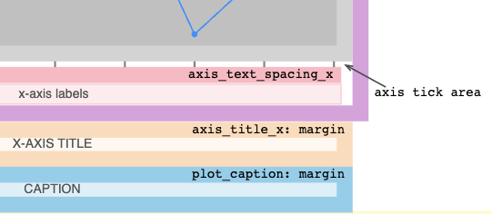

What Is New in 4.11.0
Time Series Plotting
Support temporal data types from
kotlinx.datetime,java.time, andjava.util.Support for timezone-aware
java.time.ZonedDateTimeandjava.time.OffsetDateTimeobjects.

See Date-time cookbook.

See Bitcoin trading demo.
geomSina()Geometry
See: example notebook.
geomTextRepel()andgeomLabelRepel()Geometries
See: example notebook.
waterfallPlot()ChartAnnotations support via
relativeLabelsandabsoluteLabelsparameters.
See: example notebook.
Support for combining waterfall bars with other geometry layers.

See: example notebook.
Continuous Data on Discrete Scales
Continuous data when used with discrete positional scales is no longer transformed to discrete data.
Instead, it remains continuous, allowing for precise positioning of continuous elements relative to discrete ones.
See: example notebook.
Plot Layout
The default plot layout has been improved to better accommodate axis labels and titles.
Also, newtheme()optionsaxisTextSpacing,axisTextSpacingX, andaxisTextSpacingYcontrol spacing between axis ticks and labels.
See new Plot Layout Diagrams showing various layout options and their effects on plot appearance.
And More
See CHANGELOG.md for a full list of changes.
Recent Updates in the Gallery


")


Change Log
See CHANGELOG.md for other changes and fixes.